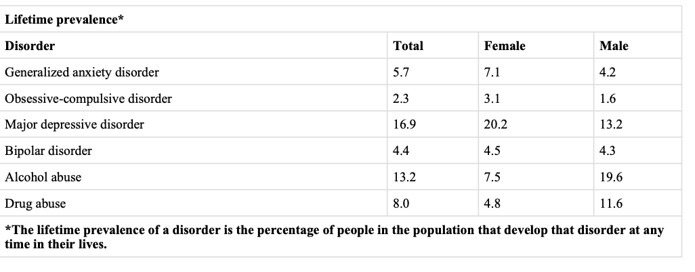
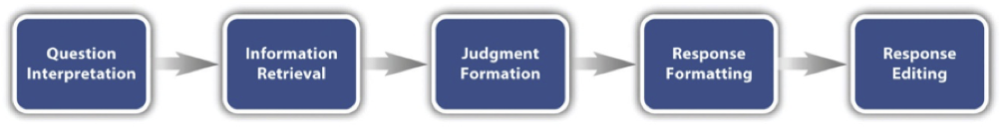
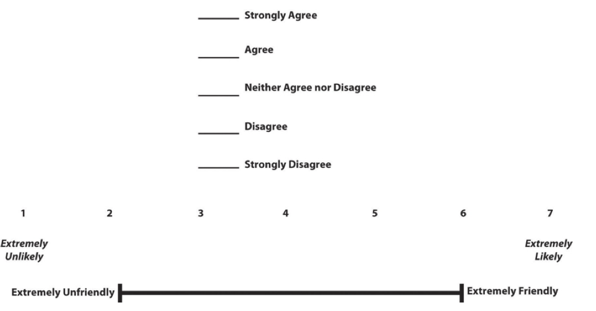
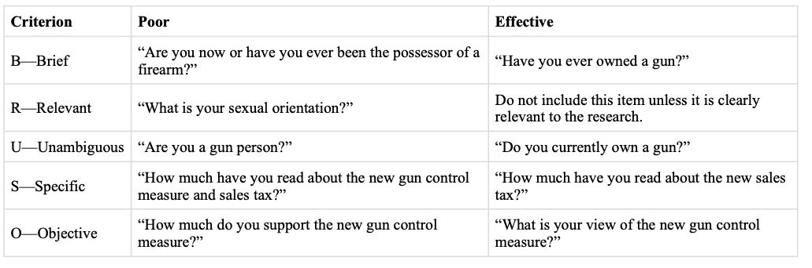
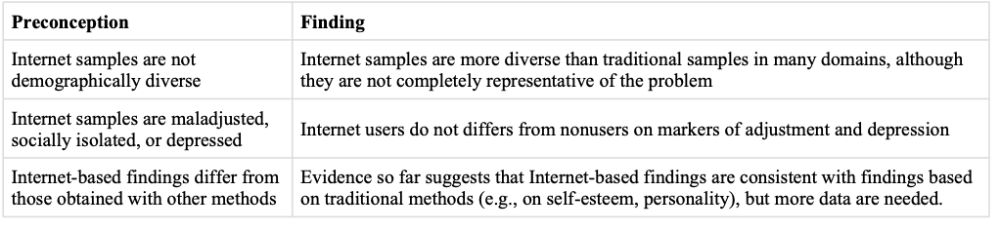

10 Survey Research
Everyone takes surveys. Whoever makes a statement about human behavior has engaged in a survey of some sort —Andrew Greeley
Shortly after the terrorist attacks in New York City and Washington, DC, in September of 2001, researcher Jennifer Lerner and her colleagues conducted an Internet-based survey of nearly 2,000 American teens and adults ranging in age from 13 to 88 (Lerner et al. 2003). They asked participants about their reactions to the attacks and for their judgments of various terrorism-related and other risks. Among the results were that the participants tended to overestimate most risks, that females did so more than males, and that there were no differences between teens and adults. The most interesting result, however, had to do with the fact that some participants were “primed” to feel anger by asking them what made them angry about the attacks and by presenting them with a photograph and audio clip intended to evoke anger. Others were primed to feel fear by asking them what made them fearful about the attacks and by presenting them with a photograph and audio clip intended to evoke fear. As the researchers hypothesized, the participants who were primed to feel anger perceived less risk than the participants who had been primed to feel fear—showing how risk perceptions are strongly tied to specific emotions.
The study by Lerner and her colleagues is an example of survey research in psychology—the topic of this chapter. We begin with an overview of survey research, including its definition, some history, and a bit about who conducts it and why. We then look at survey responding as a psychological process and the implications of this for constructing good survey questionnaires. Finally, we consider some issues related to actually conducting survey research, including sampling the participants and collecting the data.
Overview of Survey Research
Learning Objectives
- Define what survey research is, including its two important characteristics.
- Describe several different ways that survey research can be used and give some examples.
What Is Survey Research?
Survey research is a quantitative and qualitative method with two important characteristics. First, the variables of interest are measured using self-reports. In essence, survey researchers ask their participants (who are often called respondents in survey research) to report directly on their own thoughts, feelings, and behaviors. Second, considerable attention is paid to the issue of sampling. In particular, survey researchers have a strong preference for large random samples because they provide the most accurate estimates of what is true in the population. In fact, survey research may be the only approach in psychology in which random sampling is routinely used. Beyond these two characteristics, almost anything goes in survey research. Surveys can be long or short. They can be conducted in person, by telephone, through the mail, or over the Internet. They can be about voting intentions, consumer preferences, social attitudes, health, or anything else that it is possible to ask people about and receive meaningful answers. Although survey data are often analyzed using statistics, there are many questions that lend themselves to more qualitative analysis.
Most survey research is non-experimental. It is used to describe single variables (e.g., the percentage of voters who prefer one presidential candidate or another, the prevalence of schizophrenia in the general population) and also to assess statistical relationships between variables (e.g., the relationship between income and health). But surveys can also be experimental. The study by Lerner and her colleagues is a good example. Their use of self- report measures and a large national sample identifies their work as survey research. But their manipulation of an independent variable (anger vs. fear) to assess its effect on a dependent variable (risk judgments) also identifies their work as experimental.
History and Uses of Survey Research
Survey research may have its roots in English and American “social surveys” conducted around the turn of the 20th century by researchers and reformers who wanted to document the extent of social problems such as poverty (Converse 2011). By the 1930s, the US government was conducting surveys to document economic and social conditions in the country. The need to draw conclusions about the entire population helped spur advances in sampling procedures. At about the same time, several researchers who had already made a name for themselves in market research, studying consumer preferences for American businesses, turned their attention to election polling. A watershed event was the presidential election of 1936 between Alf Landon and Franklin Roosevelt. A magazine called Literary Digest conducted a survey by sending ballots (which were also subscription requests) to millions of Americans. Based on this “straw poll,” the editors predicted that Landon would win in a landslide. At the same time, the new pollsters were using scientific methods with much smaller samples to predict just the opposite—that Roosevelt would win in a landslide. In fact, one of them, George Gallup, publicly criticized the methods of Literary Digest before the election and all but guaranteed that his prediction would be correct. And of course it was. (We will consider the reasons that Gallup was right later in this chapter.) Interest in surveying around election times has led to several long-term projects, notably the Canadian Election Studies which has measured opinions of Canadian voters around federal elections since 1965. Anyone can access the data and read about the results of the experiments in these studies (see http://ces-eec.arts.ubc.ca/)
From market research and election polling, survey research made its way into several academic fields, including political science, sociology, and public health—where it continues to be one of the primary approaches to collecting new data. Beginning in the 1930s, psychologists made important advances in questionnaire design, including techniques that are still used today, such as the Likert scale. (See “What Is a Likert Scale?” in section “Constructing Survey Questionnaires”.) Survey research has a strong historical association with the social psychological study of attitudes, stereotypes, and prejudice. Early attitude researchers were also among the first psychologists to seek larger and more diverse samples than the convenience samples of university students that were routinely used in psychology (and still are).
Survey research continues to be important in psychology today. For example, survey data have been instrumental in estimating the prevalence of various mental disorders and identifying statistical relationships among those disorders and with various other factors. The National Comorbidity Survey is a large-scale mental health survey conducted in the United States (see http://www.hcp.med.harvard.edu/ncs). In just one part of this survey, nearly 10,000 adults were given a structured mental health interview in their homes in 2002 and 2003. Figure Figure 1 presents results on the lifetime prevalence of some anxiety, mood, and substance use disorders. (Lifetime prevalence is the percentage of the population that develops the problem sometime in their lifetime.) Obviously, this kind of information can be of great use both to basic researchers seeking to understand the causes and correlates of mental disorders as well as to clinicians and policymakers who need to understand exactly how common these disorders are.
And as the opening example makes clear, survey research can even be used to conduct experiments to test specific hypotheses about causal relationships between variables. Such studies, when conducted on large and diverse samples, can be a useful supplement to laboratory studies conducted on university students. Although this approach is not a typical use of survey research, it certainly illustrates the flexibility of this method.
Key Takeaways
Survey research is a quantitative approach that features the use of self-report measures on carefully selected samples. It is a flexible approach that can be used to study a wide variety of basic and applied research questions.
Survey research has its roots in applied social research, market research, and election polling. It has since become an important approach in many academic disciplines, including political science, sociology, public health, and, of course, psychology.
Exercises
- Discussion: Think of a question that each of the following professionals might try to answer using survey research.
- a social psychologist
- an educational researcher
- a market researcher who works for a supermarket chain
- the mayor of a large city
- the head of a university police force
Constructing Survey Questionnaires
Learning Objectives
- Describe the cognitive processes involved in responding to a survey item.
- Explain what a context effect is and give some examples.
- Create a simple survey questionnaire based on principles of effective item writing and organization.
The heart of any survey research project is the survey questionnaire itself. Although it is easy to think of interesting questions to ask people, constructing a good survey questionnaire is not easy at all. The problem is that the answers people give can be influenced in unintended ways by the wording of the items, the order of the items, the response options provided, and many other factors. At best, these influences add noise to the data. At worst, they result in systematic biases and misleading results. In this section, therefore, we consider some principles for constructing survey questionnaires to minimize these unintended effects and thereby maximize the reliability and validity of respondents’ answers.
Survey Responding as a Psychological Process
Before looking at specific principles of survey questionnaire construction, it will help to consider survey responding as a psychological process.
A Cognitive Model

Figure Figure 2 presents a model of the cognitive processes that people engage in when responding to a survey item. Respondents must interpret the question, retrieve relevant information from memory, form a tentative judgment, convert the tentative judgment into one of the response options provided (e.g., a rating on a 1-to-7 scale), and finally edit their response as necessary.
Consider, for example, the following questionnaire item:
- a lot more than average
- somewhat more than average
- average
- somewhat fewer than average
- a lot fewer than average
Although this item at first seems straightforward, it poses several difficulties for respondents. First, they must interpret the question. For example, they must decide whether “alcoholic drinks” include beer and wine (as opposed to just hard liquor) and whether a “typical day” is a typical weekday, typical weekend day, or both. Even though Chang and Krosnick (2003) found that asking about “typical” behaviour has been shown to be more valid than asking about “past” behaviour, their study compared “typical week” to “past week” and may be different when considering typical weekdays or weekend days) . Once they have interpreted the question, they must retrieve relevant information from memory to answer it. But what information should they retrieve, and how should they go about retrieving it? They might think vaguely about some recent occasions on which they drank alcohol, they might carefully try to recall and count the number of alcoholic drinks they consumed last week, or they might retrieve some existing beliefs that they have about themselves (e.g., “I am not much of a drinker”). Then they must use this information to arrive at a tentative judgment about how many alcoholic drinks they consume in a typical day. For example, this mental calculation might mean dividing the number of alcoholic drinks they consumed last week by seven to come up with an average number per day. Then they must format this tentative answer in terms of the response options actually provided. In this case, the options pose additional problems of interpretation. For example, what does “average” mean, and what would count as “somewhat more” than average? Finally, they must decide whether they want to report the response they have come up with or whether they want to edit it in some way. For example, if they believe that they drink much more than average, they might not want to report the higher number for fear of looking bad in the eyes of the researcher.
From this perspective, what at first appears to be a simple matter of asking people how much they drink (and receiving a straightforward answer from them) turns out to be much more complex.
Context Effects on Questionnaire Responses
Again, this complexity can lead to unintended influences on respondents’ answers. These are often referred to as context effects because they are not related to the content of the item but to the context in which the item appears (Schwarz and Strack 1991). For example, there is an item-order effect when the order in which the items are presented affects people’s responses. One item can change how participants interpret a later item or change the information that they retrieve to respond to later items. For example, researcher Fritz Strack and his colleagues asked college students about both their general life satisfaction and their dating frequency (Strack, Martin, and Schwarz 1988). When the life satisfaction item came first, the correlation between the two was only −.12, suggesting that the two variables are only weakly related. But when the dating frequency item came first, the correlation between the two was +.66, suggesting that those who date more have a strong tendency to be more satisfied with their lives. Reporting the dating frequency first made that information more accessible in memory so that they were more likely to base their life satisfaction rating on it.
The response options provided can also have unintended effects on people’s responses (Schwarz 1999). For example, when people are asked how often they are “really irritated” and given response options ranging from “less than once a year” to “more than once a month,” they tend to think of major irritations and report being irritated infrequently. But when they are given response options ranging from “less than once a day” to “several times a month,” they tend to think of minor irritations and report being irritated frequently. People also tend to assume that middle response options represent what is normal or typical. So if they think of themselves as normal or typical, they tend to choose middle response options. For example, people are likely to report watching more television when the response options are centered on a middle option of 4 hours than when centered on a middle option of 2 hours. To mitigate against order effects, rotate questions and response items when there is no natural order. Counterbalancing is a good practice for survey questions and can reduce response order effects which show that among undecided voters, the first candidate listed in a ballot receives a 2.5% boost simply by virtue of being listed first6!
Writing Survey Questionnaire Items
Types of Items
Questionnaire items can be either open-ended or closed-ended. Open-ended items simply ask a question and allow participants to answer in whatever way they choose. The following are examples of open-ended questionnaire items.
- “What is the most important thing to teach children to prepare them for life?”
- “Please describe a time when you were discriminated against because of your age.”
- “Is there anything else you would like to tell us about?”
Open-ended items are useful when researchers do not know how participants might respond or want to avoid influencing their responses. They tend to be used when researchers have more vaguely defined research questions—often in the early stages of a research project. Open-ended items are relatively easy to write because there are no response options to worry about. However, they take more time and effort on the part of participants, and they are more difficult for the researcher to analyze because the answers must be transcribed, coded, and submitted to some form of qualitative analysis, such as content analysis. The advantage to open-ended items is that they are unbiased and do not provide respondents with expectations of what the researcher might be looking for. Open-ended items are also more valid and more reliable. The disadvantage is that respondents are more likely to skip open-ended items because they take longer to answer. It is best to use open-ended questions when the answer is unsure and for quantities which can easily be converted to categories later in the analysis.
Closed-ended items ask a question and provide a set of response options for participants to choose from. The alcohol item just mentioned is an example, as are the following:
How old are you?
- Under 18
- 18 to 34
- 35 to 49
- 50 to 70
- Over 70
On a scale of 0 (no pain at all) to 10 (worst pain ever experienced), how much pain are you in right now?
Have you ever in your adult life been depressed for a period of 2 weeks or more?
Closed-ended items are used when researchers have a good idea of the different responses that participants might make. They are also used when researchers are interested in a well-defined variable or construct such as participants’ level of agreement with some statement, perceptions of risk, or frequency of a particular behavior. Closed-ended items are more difficult to write because they must include an appropriate set of response options. However, they are relatively quick and easy for participants to complete. They are also much easier for researchers to analyze because the responses can be easily converted to numbers and entered into a spreadsheet. For these reasons, closed-ended items are much more common.
All closed-ended items include a set of response options from which a participant must choose. For categorical variables like sex, race, or political party preference, the categories are usually listed and participants choose the one (or ones) that they belong to. For quantitative variables, a rating scale is typically provided. A rating scale is an ordered set of responses that participants must choose from. Figure @ref(fig:c10scales) shows several examples. The number of response options on a typical rating scale ranges from three to 11—although five and seven are probably most common. Five-point scales are best for unipolar scales where only one construct is tested, such as frequency (Never, Rarely, Sometimes, Often, Always). Seven-point scales are best for bipolar scales where there is a dichotomous spectrum, such as liking (Like very much, Like somewhat, Like slightly, Neither like nor dislike, Dislike slightly, Dislike somewhat, Dislike very much). For bipolar questions, it is useful to offer an earlier question that branches them into an area of the scale; if asking about liking ice cream, first ask “Do you generally like or dislike ice cream?” Once the respondent chooses like or dislike, refine it by offering them one of choices from the seven-point scale. Branching improves both reliability and validity (Krosnick and Berent 1993).

Although you often see scales with numerical labels, it is best to only present verbal labels to the respondents but convert them to numerical values in the analyses. Avoid partial labels or length or overly specific labels. In some cases, the verbal labels can be supplemented with (or even replaced by) meaningful graphics. The last rating scale shown in Figure Figure 3 is a visual- analog scale, on which participants make a mark somewhere along the horizontal line to indicate the magnitude of their response.
In reading about psychological research, you are likely to encounter the term Likert scale. Although this term is sometimes used to refer to almost any rating scale (e.g., a 0-to-10 life satisfaction scale), it has a much more precise meaning.
In the 1930s, researcher Rensis Likert (pronounced LICK-ert) created a new approach for measuring people’s attitudes (Likert 1932). It involves presenting people with several statements—including both favorable and unfavorable statements—about some person, group, or idea. Respondents then express their agreement or disagreement with each statement on a 5-point scale: Strongly Agree, Agree, Neither Agree nor Disagree, Disagree, Strongly Disagree. Numbers are assigned to each response (with reverse coding as necessary) and then summed across all items to produce a score representing the attitude toward the person, group, or idea. The entire set of items came to be called a Likert scale.
Thus unless you are measuring people’s attitude toward something by assessing their level of agreement with several statements about it, it is best to avoid calling it a Likert scale. You are probably just using a “rating scale.”
Writing Effective Items
We can now consider some principles of writing questionnaire items that minimize unintended context effects and maximize the reliability and validity of participants’ responses. A rough guideline for writing questionnaire items is provided by the BRUSO model (Peterson 2000). An acronym, BRUSO stands for “brief,” “relevant,” “unambiguous,” “specific,” and “objective.” Effective questionnaire items are brief and to the point. They avoid long, overly technical, or unnecessary words. This brevity makes them easier for respondents to understand and faster for them to complete. Effective questionnaire items are also relevant to the research question. If a respondent’s sexual orientation, marital status, or income is not relevant, then items on them should probably not be included. Again, this makes the questionnaire faster to complete, but it also avoids annoying respondents with what they will rightly perceive as irrelevant or even “nosy” questions. Effective questionnaire items are also unambiguous; they can be interpreted in only one way. Part of the problem with the alcohol item presented earlier in this section is that different respondents might have different ideas about what constitutes “an alcoholic drink” or “a typical day.” Effective questionnaire items are also specific, so that it is clear to respondents what their response should be about and clear to researchers what it is about. A common problem here is closed-ended items that are “double barrelled.” They ask about two conceptually separate issues but allow only one response. For example, “Please rate the extent to which you have been feeling anxious and depressed.” This item should probably be split into two separate items—one about anxiety and one about depression. Finally, effective questionnaire items are objective in the sense that they do not reveal the researcher’s own opinions or lead participants to answer in a particular way. Figure Figure 4 shows some examples of poor and effective questionnaire items based on the BRUSO criteria. The best way to know how people interpret the wording of the question is to conduct pre-tests and ask a few people to explain how they interpreted the question.

For closed-ended items, it is also important to create an appropriate response scale. For categorical variables, the categories presented should generally be mutually exclusive and exhaustive. Mutually exclusive categories do not overlap. For a religion item, for example, the categories of Christian and Catholic are not mutually exclusive but Protestant and Catholic are. Exhaustive categories cover all possible responses. Although Protestant and Catholic are mutually exclusive, they are not exhaustive because there are many other religious categories that a respondent might select: Jewish, Hindu, Buddhist, and so on. In many cases, it is not feasible to include every possible category, in which case an Other category, with a space for the respondent to fill in a more specific response, is a good solution. If respondents could belong to more than one category (e.g., race), they should be instructed to choose all categories that apply.
For rating scales, five or seven response options generally allow about as much precision as respondents are capable of. However, numerical scales with more options can sometimes be appropriate. For dimensions such as attractiveness, pain, and likelihood, a 0-to-10 scale will be familiar to many respondents and easy for them to use. Regardless of the number of response options, the most extreme ones should generally be “balanced” around a neutral or modal midpoint. An example of an unbalanced rating scale measuring perceived likelihood might look like this:
Unlikely | Somewhat Likely | Likely | Very Likely | Extremely Likely
A balanced version might look like this:
Extremely Unlikely | Somewhat Unlikely | As Likely as Not | Somewhat Likely |Extremely Likely
Note, however, that a middle or neutral response option does not have to be included. Researchers sometimes choose to leave it out because they want to encourage respondents to think more deeply about their response and not simply choose the middle option by default. Including middle alternatives on bipolar dimensions is useful to allow people to genuinely choose an option that is neither.
Formatting the Questionnaire
Writing effective items is only one part of constructing a survey questionnaire. For one thing, every survey questionnaire should have a written or spoken introduction that serves two basic functions (Peterson 2000). One is to encourage respondents to participate in the survey. In many types of research, such encouragement is not necessary either because participants do not know they are in a study (as in naturalistic observation) or because they are part of a subject pool and have already shown their willingness to participate by signing up and showing up for the study. Survey research usually catches respondents by surprise when they answer their phone, go to their mailbox, or check their e-mail—and the researcher must make a good case for why they should agree to participate.
Thus the introduction should briefly explain the purpose of the survey and its importance, provide information about the sponsor of the survey (university-based surveys tend to generate higher response rates), acknowledge the importance of the respondent’s participation, and describe any incentives for participating.
The second function of the introduction is to establish informed consent. Remember that this aim means describing to respondents everything that might affect their decision to participate. This includes the topics covered by the survey, the amount of time it is likely to take, the respondent’s option to withdraw at any time, confidentiality issues, and so on. Written consent forms are not typically used in survey research, so it is important that this part of the introduction be well documented and presented clearly and in its entirety to every respondent.
The introduction should be followed by the substantive questionnaire items. But first, it is important to present clear instructions for completing the questionnaire, including examples of how to use any unusual response scales. Remember that the introduction is the point at which respondents are usually most interested and least fatigued, so it is good practice to start with the most important items for purposes of the research and proceed to less important items. Items should also be grouped by topic or by type. For example, items using the same rating scale (e.g., a 5-point agreement scale) should be grouped together if possible to make things faster and easier for respondents. Demographic items are often presented last because they are least interesting to participants but also easy to answer in the event respondents have become tired or bored. Of course, any survey should end with an expression of appreciation to the respondent.
Key Takeaways
Responding to a survey item is itself a complex cognitive process that involves interpreting the question, retrieving information, making a tentative judgment, putting that judgment into the required response format, and editing the response.
Survey questionnaire responses are subject to numerous context effects due to question wording, item order, response options, and other factors. Researchers should be sensitive to such effects when constructing surveys and interpreting survey results.
Survey questionnaire items are either open-ended or closed-ended. Open-ended items simply ask a question and allow respondents to answer in whatever way they want. Closed-ended items ask a question and provide several response options that respondents must choose from.
Use verbal labels instead of numerical labels although the responses can be converted to numerical data in the analyses.
According to the BRUSO model, questionnaire items should be brief, relevant, unambiguous, specific, and objective.
Exercises
Discussion: Write a survey item and then write a short description of how someone might respond to that item based on the cognitive model of survey responding (or choose any item on the Rosenberg Self-Esteem Scale at http://www.bsos.umd.edu/socy/research/rosenberg.htm).
Practice: Write survey questionnaire items for each of the following general questions. In some cases, a series of items, rather than a single item, might be necessary.
- How much does the respondent use Facebook?
- How much exercise does the respondent get?
- How likely does the respondent think it is that the incumbent will be re-elected in the next presidential election?
- To what extent does the respondent experience “road rage”?
Conducting Surveys
Learning Objectives
- Explain the difference between probability and non-probability sampling, and describe the major types of probability sampling.
- Define sampling bias in general and non-response bias in particular. List some techniques that can be used to increase the response rate and reduce non-response bias.
- List the four major ways to conduct a survey along with some pros and cons of each.
In this section, we consider how to go about conducting a survey. We first consider the issue of sampling, followed by some different methods of actually collecting survey data.
Sampling
Essentially all psychological research involves sampling—selecting a sample to study from the population of interest. Sampling falls into two broad categories. Probability sampling occurs when the researcher can specify the probability that each member of the population will be selected for the sample. Non-probability sampling occurs when the researcher cannot specify these probabilities. Most psychological research involves non-probability sampling. Convenience sampling—studying individuals who happen to be nearby and willing to participate—is a very common form of non-probability sampling used in psychological research.
Survey researchers, however, are much more likely to use some form of probability sampling. This tendency is because the goal of most survey research is to make accurate estimates about what is true in a particular population, and these estimates are most accurate when based on a probability sample. For example, it is important for survey researchers to base their estimates of election outcomes—which are often decided by only a few percentage points—on probability samples of likely registered voters.
Compared with non-probability sampling, probability sampling requires a very clear specification of the population, which of course depends on the research questions to be answered. The population might be all registered voters in New York State, all Canadian consumers who have purchased a car in the past year, women in California over 40 years old who have received a mammogram in the past decade, or all the alumni of a particular university. Once the population has been specified, probability sampling requires a sampling frame. This sampling frame is essentially a list of all the members of the population from which to select the respondents. Sampling frames can come from a variety of sources, including telephone directories, lists of registered voters, and hospital or insurance records. In some cases, a map can serve as a sampling frame, allowing for the selection of cities, streets, or households.
There are a variety of different probability sampling methods. Simple random sampling is done in such a way that each individual in the population has an equal probability of being selected for the sample. This type of sampling could involve putting the names of all individuals in the sampling frame into a hat, mixing them up, and then drawing out the number needed for the sample. Given that most sampling frames take the form of computer files, random sampling is more likely to involve computerized sorting or selection of respondents. A common approach in telephone surveys is random-digit dialing, in which a computer randomly generates phone numbers from among the possible phone numbers within a given geographic area.
A common alternative to simple random sampling is stratified random sampling, in which the population is divided into different subgroups or “strata” (usually based on demographic characteristics) and then a random sample is taken from each “stratum.” Stratified random sampling can be used to select a sample in which the proportion of respondents in each of various subgroups matches the proportion in the population. For example, because about 15.3% of the Canadian population is Asian, stratified random sampling can be used to ensure that a survey of 1,000 Canadian adults includes about 153 Asian Canadian respondents. Stratified random sampling can also be used to sample extra respondents from particularly small subgroups—allowing valid conclusions to be drawn about those subgroups. For example, because Black Canadians make up a fairly small percentage of the Canadian population (about 2.9%), a simple random sample of 1,000 Canadian adults might include too few Black Canadians to draw any conclusions about them as distinct from any other subgroup. If this is important to the research question, however, then stratified random sampling could be used to ensure that enough Black Canadian respondents are included in the sample to draw valid conclusions about Black Canadians as a whole.
Yet another type of probability sampling is cluster sampling, in which larger clusters of individuals are randomly sampled and then individuals within each cluster are randomly sampled. For example, to select a sample of small-town residents in Saskatchewan, a researcher might randomly select several small towns and then randomly select several individuals within each town. Cluster sampling is especially useful for surveys that involve face-to- face interviewing because it minimizes the amount of traveling that the interviewers must do. For example, instead of traveling to 200 small towns to interview 200 residents, a research team could travel to 10 small towns and interview 20 residents of each. The National Comorbidity Survey was done using a form of cluster sampling.
How large does a survey sample need to be? In general, this estimate depends on two factors. One is the level of confidence in the result that the researcher wants. The larger the sample, the closer any statistic based on that sample will tend to be to the corresponding value in the population. The other factor is the budget of the study. Larger samples provide greater confidence, but they take more time, effort, and money to obtain. Taking these two factors into account, most survey research uses sample sizes that range from about 100 to about 1,000.
Sample Size and Population Size
Why is a sample of 1,000 considered to be adequate for most survey research—even when the population is much larger than that? Consider, for example, that a sample of only 1,000 registered voters is generally considered a good sample of the roughly 25 million registered voters in the Canadian population—even though it includes only about 0.00004% of the population! The answer is a bit surprising.
One part of the answer is that a statistic based on a larger sample will tend to be closer to the population value and that this can be characterized mathematically. Imagine, for example, that in a sample of registered voters, exactly 50% say they intend to vote for the incumbent. If there are 100 voters in this sample, then there is a 95% chance that the true percentage in the population is between 40 and 60. But if there are 1,000 voters in the sample, then there is a 95% chance that the true percentage in the population is between 47 and 53. Although this “95% confidence interval” continues to shrink as the sample size increases, it does so at a slower rate. For example, if there are 2,000 voters in the sample, then this reduction only reduces the 95% confidence interval to 48 to 52. In many situations, the small increase in confidence beyond a sample size of 1,000 is not considered to be worth the additional time, effort, and money.
Another part of the answer—and perhaps the more surprising part—is that confidence intervals depend only on the size of the sample and not on the size of the population. So a sample of 1,000 would produce a 95% confidence interval of 47 to 53 regardless of whether the population size was a hundred thousand, a million, or a hundred million.
Sampling Bias
Probability sampling was developed in large part to address the issue of sampling bias. Sampling bias occurs when a sample is selected in such a way that it is not representative of the entire population and therefore produces inaccurate results. This bias was the reason that the Literary Digest straw poll was so far off in its prediction of the 1936 presidential election. The mailing lists used came largely from telephone directories and lists of registered automobile owners, which over-represented wealthier people, who were more likely to vote for Landon. Gallup was successful because he knew about this bias and found ways to sample less wealthy people as well.
There is one form of sampling bias that even careful random sampling is subject to. It is almost never the case that everyone selected for the sample actually responds to the survey. Some may have died or moved away, and others may decline to participate because they are too busy, are not interested in the survey topic, or do not participate in surveys on principle. If these survey non-responders differ from survey responders in systematic ways, then this difference can produce non-response bias. For example, in a mail survey on alcohol consumption, researcher Vivienne Lahaut and colleagues found that only about half the sample responded after the initial contact and two follow-up reminders (Lahaut et al. 2002). The danger here is that the half who responded might have different patterns of alcohol consumption than the half who did not, which could lead to inaccurate conclusions on the part of the researchers. So to test for non-response bias, the researchers later made unannounced visits to the homes of a subset of the non-responders—coming back up to five times if they did not find them at home. They found that the original non-responders included an especially high proportion of abstainers (nondrinkers), which meant that their estimates of alcohol consumption based only on the original responders were too high.
Although there are methods for statistically correcting for non-response bias, they are based on assumptions about the non-responders—for example, that they are more similar to late responders than to early responders—which may not be correct. For this reason, the best approach to minimizing non-response bias is to minimize the number of non-responders—that is, to maximize the response rate. There is a large research literature on the factors that affect survey response rates (Groves et al. 2011). In general, in-person interviews have the highest response rates, followed by telephone surveys, and then mail and Internet surveys. Among the other factors that increase response rates are sending potential respondents a short prenotification message informing them that they will be asked to participate in a survey in the near future and sending simple follow-up reminders to non- responders after a few weeks. The perceived length and complexity of the survey also makes a difference, which is why it is important to keep survey questionnaires as short, simple, and on topic as possible. Finally, offering an incentive—especially cash—is a reliable way to increase response rates. However, ethically, there are limits to offering incentives that may be so large as to be considered coercive.
Conducting the Survey
The four main ways to conduct surveys are through in-person interviews, by telephone, through the mail, and over the Internet. As with other aspects of survey design, the choice depends on both the researcher’s goals and the budget. In-person interviews have the highest response rates and provide the closest personal contact with respondents. Personal contact can be important, for example, when the interviewer must see and make judgments about respondents, as is the case with some mental health interviews. But in-person interviewing is by far the most costly approach. Telephone surveys have lower response rates and still provide some personal contact with respondents. They can also be costly but are generally less so than in-person interviews. Traditionally, telephone directories have provided fairly comprehensive sampling frames. However, this trend is less true today as more people choose to only have cell phones and do not install land lines that would be included in telephone directories. Mail surveys are less costly still but generally have even lower response rates—making them most susceptible to non-response bias.
Online surveys
Not surprisingly, Internet surveys are becoming more common. They are increasingly easy to construct and use. Although initial contact can be made by mail with a link provided to the survey, this approach does not necessarily produce higher response rates than an ordinary mail survey. A better approach is to make initial contact by e-mail with a link directly to the survey. This approach can work well when the population consists of the members of an organization who have known e-mail addresses and regularly use them (e.g., a university community). For other populations, it can be difficult or impossible to find a comprehensive list of e-mail addresses to serve as a sampling frame. Alternatively, a request to participate in the survey with a link to it can be posted on websites known to be visited by members of the population. But again it is very difficult to get anything approaching a random sample this way because the members of the population who visit the websites are likely to be different from the population as a whole. However, Internet survey methods are in rapid development. Because of their low cost, and because more people are online than ever before, Internet surveys are likely to become the dominant approach to survey data collection in the near future.
Finally, it is important to note that some of the concerns that people have about collecting data online (e.g., that internet-based findings differ from those obtained with other methods) have been found to be myths.
Figure Figure 5 adapted from Gosling, Vazire, Srivastava, & John (2004) addresses three such preconceptions about data collected in web-based studies:

Online Survey Creation
There are now several online tools for creating online questionnaires. After a questionnaire is created, a link to it can then be e-mailed to potential respondents or embedded in a web page. The following websites are among those that offer free accounts. Although the free accounts limit the number of questionnaire items and the number of respondents, they can be useful for doing small-scale surveys and for practicing the principles of good questionnaire construction.
Surveymonkey—http://surveymonkey.com/
Google Forms—https://www.google.com/forms/about/
There are also survey sites hosted in other countries outside of North America.
Another new tool for survey researchers is Mechanical Turk (MTurk) created by Amazon.com https://www.mturk.com Originally created for simple usability testing, MTurk has a database of over 500,000 workers from over 190 countries4. You can put simple tasks (for example, different question wording to test your survey items), set parameters as your sample frame dictates and deploy your experiment at a very low cost (for example, a few cents for less than 5 minutes). MTurk has been lauded as an inexpensive way to gather high quality data (Buhrmester, Kwang, and Gosling 2011).
Key Takeaways
Responding to a survey item is itself a complex cognitive process that involves interpreting the question, retrieving information, making a tentative judgment, putting that judgment into the required response format, and editing the response.
Survey questionnaire responses are subject to numerous context effects due to question wording, item order, response options, and other factors. Researchers should be sensitive to such effects when constructing surveys and interpreting survey results.
Survey questionnaire items are either open-ended or closed-ended. Open-ended items simply ask a question and allow respondents to answer in whatever way they want. Closed-ended items ask a question and provide several response options that respondents must choose from.
Use verbal labels instead of numerical labels although the responses can be converted to numerical data in the analyses.
According to the BRUSO model, questionnaire items should be brief, relevant, unambiguous, specific, and objective.
Exercises
Discussion: If possible, identify an appropriate sampling frame for each of the following populations. If there is no appropriate sampling frame, explain why.
- students at a particular university
- adults living in the state of New York
References
Buhrmester, Michael, Tracy Kwang, and Samuel D. Gosling. 2011. “Amazon’s Mechanical Turk: A New Source of Inexpensive, yet High-Quality, Data?” Perspectives on Psychological Science 6 (1): 3–5.
Chang, LinChiat, and Jon A. Krosnick. 2003. “3. Measuring the Frequency of Regular Behaviors: Comparing the ‘Typical Week’ to the ‘Past Week’.” Sociological Methodology 33 (1): 55–80.
Converse, Jean M. 2011. Survey Research in the United States: Roots and Emergence 1890-1960. Transaction Publishers.
Gosling, Samuel D., Simine Vazire, Sanjay Srivastava, and Oliver P. John. 2004. “Should We Trust Web-Based Studies? A Comparative Analysis of Six Preconceptions about Internet Questionnaires.” American Psychologist 59 (2): 93.
Groves, Robert M., Floyd J. Fowler Jr, Mick P. Couper, James M. Lepkowski, Eleanor Singer, and Roger Tourangeau. 2011. Survey Methodology. Vol. 561. John Wiley & Sons.
Krosnick, Jon A., and Matthew K. Berent. 1993. “Comparisons of Party Identification and Policy Preferences: The Impact of Survey Question Format.” American Journal of Political Science, 941–64.
Lahaut, Vivienne MHCJ, Harrie AM Jansen, Dike Van de Mheen, and Henk FL Garretsen. 2002. “Non-Response Bias in a Sample Survey on Alcohol Consumption.” Alcohol and Alcoholism 37 (3): 256–60.
Lerner, Jennifer S., Roxana M. Gonzalez, Deborah A. Small, and Baruch Fischhoff. 2003. “Effects of Fear and Anger on Perceived Risks of Terrorism: A National Field Experiment.” Psychological Science 14 (2): 144–50.
Likert, Rensis. 1932. “A Technique for the Measurement of Attitudes.” Archives of Psychology.
Peterson, Robert A. 2000. Constructing Effective Questionnaires. Chronicle Books.
Schwarz, Norbert. 1999. “Self-Reports: How the Questions Shape the Answers.” American Psychologist 54 (2): 93.
Schwarz, Norbert, and Fritz Strack. 1991. “Context Effects in Attitude Surveys: Applying Cognitive Theory to Social Research.” European Review of Social Psychology 2 (1): 31–50.
Strack, Fritz, Leonard L. Martin, and Norbert Schwarz. 1988. “Priming and Communication: Social Determinants of Information Use in Judgments of Life Satisfaction.” European Journal of Social Psychology 18 (5): 429–42.